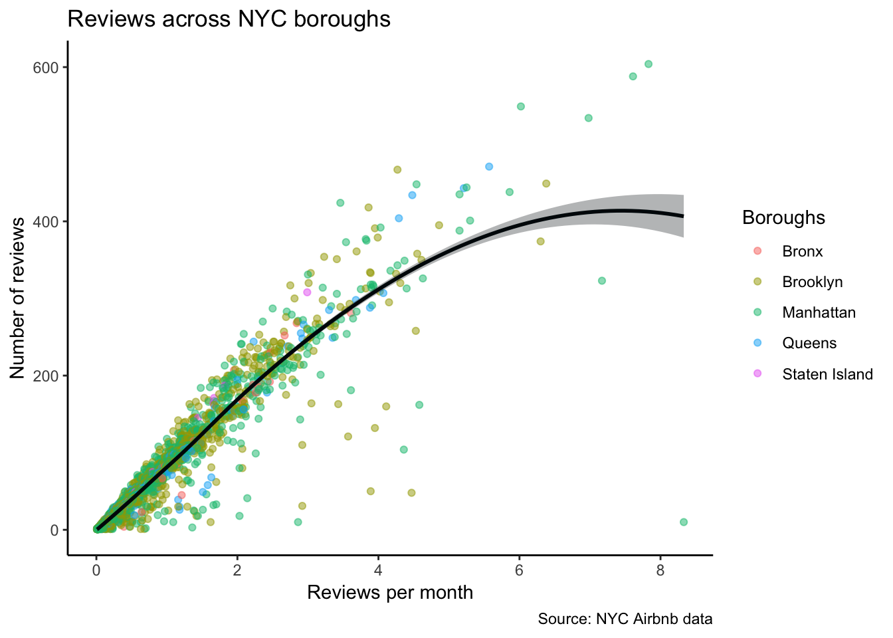
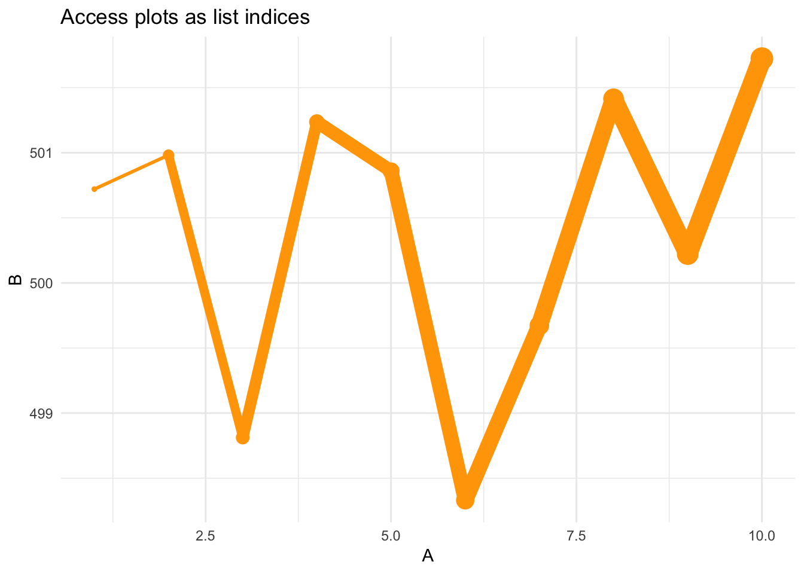

Lesson 6: Lists, lists, lists and applying functions with purrr
Functions for Lesson 6
map, pluck, keep, discard, compact
Packages for Lesson 6
dplyr, purrr
Agenda
Use the purrr package to apply functions to lists and vectors.
Cheat sheet for the purrr package.

Do First
Recreate the below plot using the smaller NYC Airbnb dataset. The curve is a ‘loess’. To change the legend title, add the (unintuitive) colour = "your legend title" argument to the labs() function.
# smaller csv file (16 cols)
url <- "http://data.insideairbnb.com/united-states/ny/new-york-city/2019-06-02/visualisations/listings.csv"
nyc <- readr::read_csv(url)
nyc <- nyc[nyc$id < 1e+06, ] # get smaller subet of data
Create some data in a list
First generate some random data
s1 <- sample(10) # random number sample
s2 <- rnorm(10, 500) # sample 10 normally distributed random numbers around a mean of 500
s3 <- runif(10) # random uniform distribution
s1 [1] 2 6 9 5 10 4 1 3 8 7s2 [1] 500.9817 498.3303 500.2217 500.8603 501.7225 501.2358 500.7204 498.8120 501.4141 499.6728s3 [1] 0.13106599 0.24596661 0.04833375 0.22511290 0.37415717 0.77044256 0.25411850 0.39270142
[9] 0.42283829 0.89124000Now combine these into a list using list()
ls1 <- list(s1, s2, s3) # create a list of these data
ls1[[1]]
[1] 2 6 9 5 10 4 1 3 8 7
[[2]]
[1] 500.9817 498.3303 500.2217 500.8603 501.7225 501.2358 500.7204 498.8120 501.4141 499.6728
[[3]]
[1] 0.13106599 0.24596661 0.04833375 0.22511290 0.37415717 0.77044256 0.25411850 0.39270142
[9] 0.42283829 0.89124000ls1 %>% strList of 3
$ : int [1:10] 2 6 9 5 10 4 1 3 8 7
$ : num [1:10] 501 498 500 501 502 ...
$ : num [1:10] 0.1311 0.246 0.0483 0.2251 0.3742 ...Exercise 0
List indexing
Print the ls1 list object and take note of the index and elements
ls1
# index
ls1[1]
ls1[2]
ls1[3]
# elements
ls1[[1]][[1]]
ls1[[1]][[3]]
ls1[[2]][[10]]
ls1[[3]][[11]] # ??
ls1[[3]] %>% length
# what's the difference?
ls1[1]
ls1[[1]]Apply functions
The purrr package uses the following apply functions to apply function iteratively to a list or vector.
map Apply a function to each element of a list
require(purrr)
set.seed(12) # set a number seed to generate reprodicible results for random data
map(ls1, mean) # get the mean Exercise 1
Apply summary stats to the ls1 list data
* sum
* summary
* max
* sqrt
* length and lengths
What happens when you run the following and why?
mean(ls1)
sum(ls1)
Exercise 2
Filter lists
pluck Select an element by name or index
keep Select elements that pass a logical test
discard Select elements that do not pass a logical test
compact Drop empty elements
pluck(ls1, 3) # advantage = returns numeric
ls1[3][[1]] # this is the same as above
func <- map(ls1, mean) > 10 # create a logical test (a predicate function)
keep(ls1, func)
discard(ls1, func)
ls2 <- list(1, NA, NULL, integer(0), list()) # list of empty and null things
compact(ls2)Store plots in lists for easy retrieval. Create two plots of the ls1 data (called ls1p and ls2p) and store in a list called plot_list.
plot_list <- list(ls1p, ls2p)Plot your plot from the object plot_list

Exercise 3
Summarise lists
every Do all elements pass a test?
some Do some elements pass a test?
has_element Does a list contain an element?
detect Find first element to pass
detect_index Find index of first element to pass
vec_depth Return depth (number of levels of indexes)
ls1 %>% every(is.character)
ls1 %>% some(is.character)
ls1 %>% has_element("foo")
ls1 %>% detect(is.character)
ls1 %>% detect_index(is.character)
ls1 %>% vec_depthExercise 4
Transform lists
modify Apply function to each element
modify_at Apply function to elements by name or index
modify_if Apply function to elements that pass a test
modify_depth Apply function to each element at a given level of a list
Further useful purrr functions
pmap Apply a function to groups of elements from lists of lists
lmap Apply function to each list-element of a list or vector
imap Apply function to each element of a list or vector and its index